<ion-header>
  <ion-navbar>
    <button ion-button menuToggle>
      <!-- <ion-icon name="close" color="brown"></ion-icon> -->
    </button>
    <ion-title> Contents </ion-title>
    <ion-buttons end>
      <button ion-button class="cal-icon" (click)="closeModal()">
        
      </button>
    </ion-buttons>
  </ion-navbar>
</ion-header>
<ion-content>
  <div class="outline-wrapper">
    <ion-row *ngFor="let point of outline">
      <button
        type="button"
        class="button outline-btn"
        (click)="selectPoint(point.index);"
      >
        {{point.title}}
      </button>
    </ion-row>
  </div>
</ion-content>
<!-- <ion-footer padding>
  <ion-row>
    <ion-col col-6>
      <button class="global-btn" ion-button color="brown">
        Start Learning
      </button>
   
    <ion-col col-6>
      <button class="global-btn" ion-button color="brown">
        Close
      </button>
    </ion-col>
  </ion-row>
</ion-footer> -->
